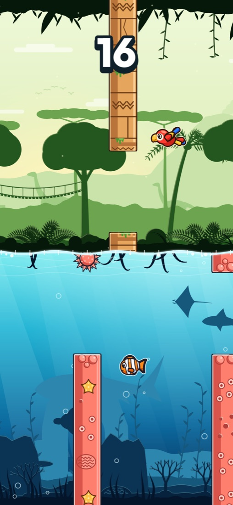
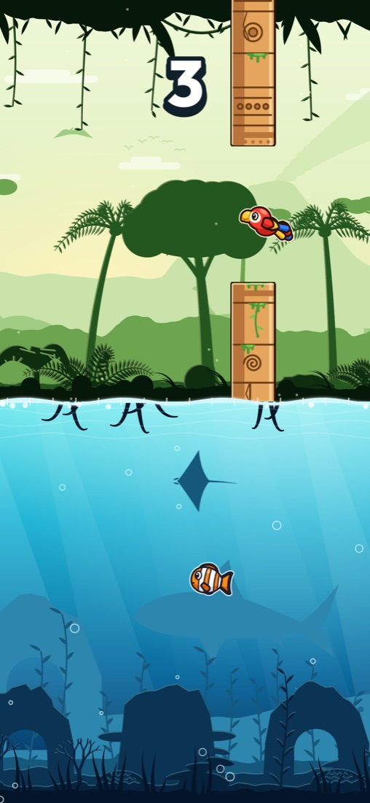
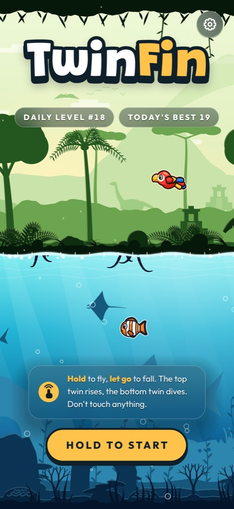
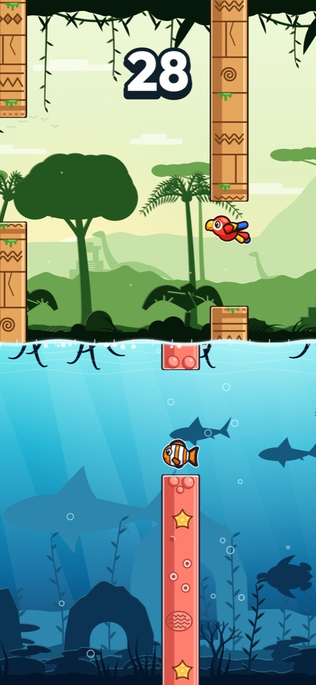
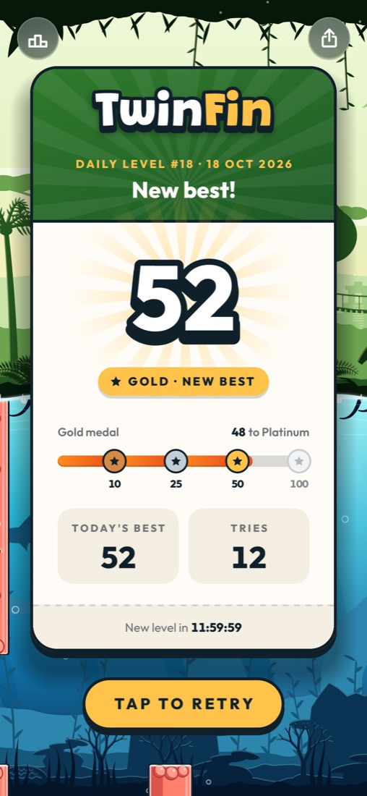

TwinFin
One thumbTwo worlds
Hold to fly, let go to fall. A scarlet macaw above the waterline, its twin, a clownfish, below. One move steers both. Touch anything and the run is over.
Go on, hold anywhere on the scene.
How it plays
Two Worlds. One Move.
When the macaw climbs, the fish dives. When it falls, the fish rises. Guide them both through ancient ruins, venus flytraps and dangling spiders up top, and coral reefs and spiky urchins down below.
- 01
Hold to Fly
Press and hold anywhere on the screen. The macaw beats its wings and climbs, and the clownfish dives to match.
- 02
Let Go to Fall
Lift your thumb and both drift back towards the waterline. Every gap is a little dance between the two.
- 03
Touch Nothing
One bump and the run is over. Tap to try again straight away. No loading, no waiting.
A new level every day
Same Level. Everyone. Today.
Every day at midnight UTC a fresh level appears, and it is the same level for every player in the world. Learn it, retry it as often as you like, and see how far you get before the next one arrives.
Brutally hard, totally fair. Every gap in every level is checked by a solver before you see it, so there is always a way through.
Daily level
New level in
Daily and all time leaderboards in Game Center
Earn all four
Medals Worth Bragging About.
Most players will be proud of Bronze. Very few will ever see Platinum.
- Bronze10 gates
- Silver25 gates
- Gold50 gates
- Platinum100 gates
A look inside
Bright Worlds. Tight Gaps.





Good to know
Quick Questions.
Is TwinFin free?
Yes, TwinFin is free to download and play. Every daily level, every medal and both leaderboards are there for everyone.
Which phones does it run on?
iPhone with iOS 17 or later. An Android version is on the way.
Do I need an internet connection or an account?
No account and nothing to sign up for. The daily level is worked out on your phone, so you can play offline. Leaderboards use Game Center if you are signed in.
What happens to my data?
Your scores and settings stay on your phone, and there is no account to create. The privacy policy has the details.
How Far Can Your Twins Go?
A new level is waiting today. So are the scores to beat.